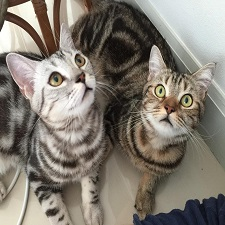
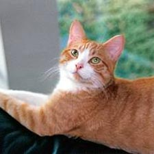
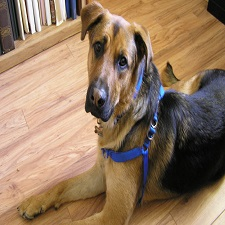

Pets-To-Go
Kittens from same litter looking for a Home
Domestic Shorthairs
SNOWBALL & SALLY:
6 months old, spayed female domestic shorthairs, 4 lbs. (Snowball) and 5 lbs. (Sally) If you’re looking to bring some love and joy into your home, look no further than these two girls. They’re 6-month-old rescues—amazingly sweet and loving. They’re affectionate (big-time purrers and cuddlers), playful, and endlessly entertaining. They are also healthy, have had their shots, have been spayed, and are litterbox trained. Because they’ve bonded to each other, we’d like to keep them together.care
Astro Loves People
Domestic Shorthair
Astro:
2 years old, neutered male, domestic shorthair, 11 lbs Astro can thank his lucky stars, because after a car hit him, he made it out of the vet hospital in Springfield and found a temporary home with us. Astro’s a little nervous, but once he settles down, he loves people to pet him. He’s lean and lanky, and even though we think he’s fit to run a kitty marathon, he weighs almost 12 pounds! Astro is a sweetheart, but he’s very scared right now. Come meet with him and see what a great guy he can be. Maybe you can give him his forever home! For information about Astro, call Jessica at Pets to Go: (555) 555-5555.care
A High-Energy Bundle of Fun
Shepard Mix
Cindy
3 years old, spayed female, Shepherd mix, 40 lbs. Cindy came to us because her family was splitting up. She’s never gotten the attention a young dog needs. Cindy is super playful. She loves toys, and her favorite game is fetch. She’s a smart cookie and adapts well to positive training. She already knows “sit,” “down,” “stay,” “shake,” and “sit pretty,” and she’s learning more fun tricks like “roll over.” Cindy is house-trained, rides well in the car, and enjoys being brushed and groomed. She behaves well around the house and respects her boundaries. This special girl needs an adult-only home with people who have experience with large dogs, so she can continue to develop into a well-adjusted dog. Cindy needs someone who’ll give her very clear rules, lots of love, and plenty of exercise. In return, she’ll be your loyal friend for life.care